https://pan.quark.cn/s/820e9f1c9ba3
https://share.feijipan.com/s/bwZPOUhh
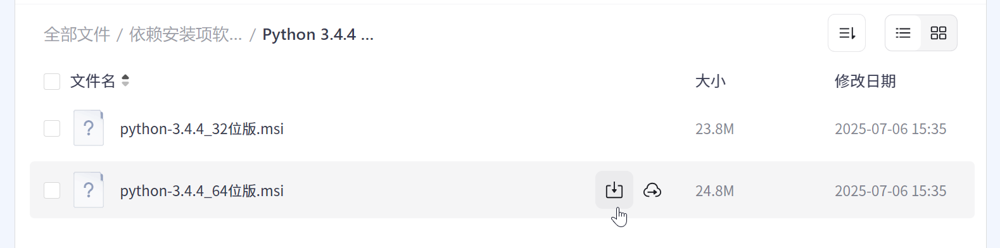
从网盘下载安装包
网盘内同时提供了32位和64位的安装包，请根据自己电脑的系统规格（比如：Windows 10 22H2 64位）选择下载并安装。
如何区分我的系统是32位还是64位？点击这里
安装这个文件夹里面的Python3.4.4
（两个版本可选，不是32位版系统的话就用64位版，否则用32位版）
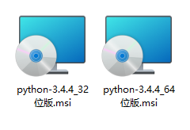
Python3.4.4安装包
双击运行安装程序，第一步选择 “Install for all users”（为所有人安装），然后点击 “Next”（下一步）。
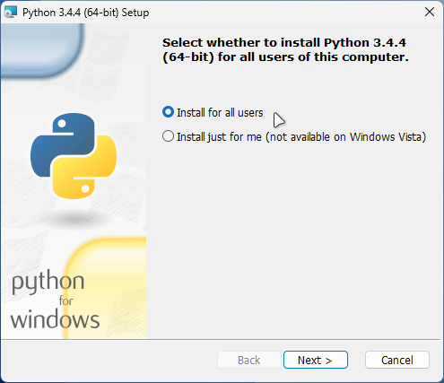
选择为所有人安装
然后选择安装位置，这里没必要更改，直接 “Next”（下一步）。
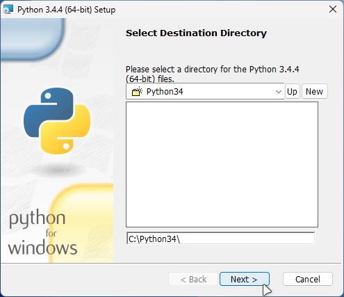
选择默认安装位置
然后选择要安装的组件，这里默认是全选的，直接 “Next”（下一步）即可。
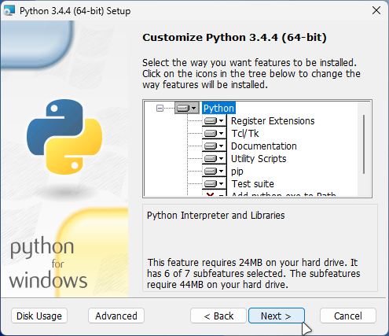
选择要安装的组件
然后等待安装完成
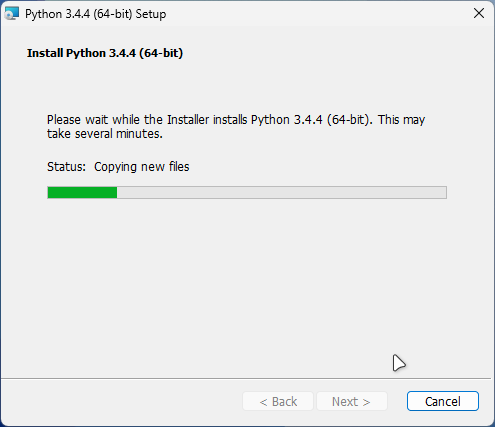
等待安装完成
安装完成后，点击 “Finish”（结束）关闭窗口。
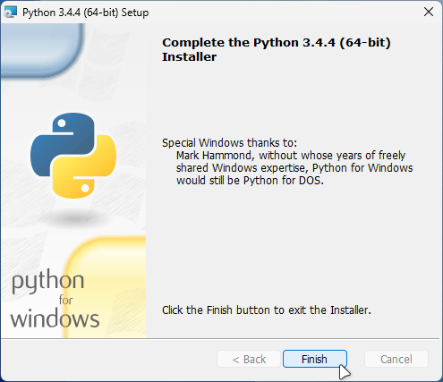
安装完成
下面，可以测试一下是否安装成功。
打开开始菜单，并找到“Python 3.4”文件夹里面的“Python 3.4 (command line)”
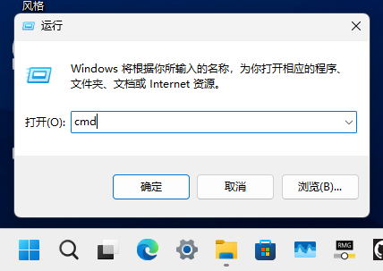
找到Python命令行程序
打开这个程序，如果弹出来的窗口出现 Python 3.4.4 (v3.4.4:737efcadf5a6, Dec 20 2015, 20:20:57) [MSC v.1600 64 bit (AMD64)] on win32 这样的提示，说明安装成功。
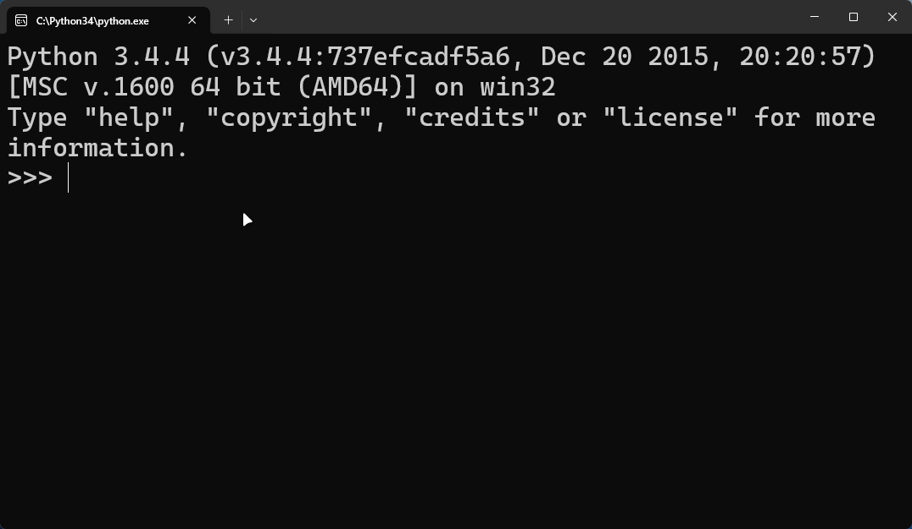
测试安装成功
综上，初步结论为：Windows11 和 较新版的Windows10用户不必区分32位和64位，都以64位版Python为宜。
其次，对于 Windows8 及以上，可以右键开始菜单图标，点击“系统”
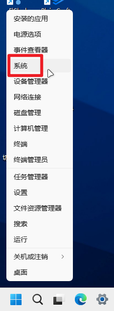
点击“系统”
然后在弹出的窗口中，可以清晰的看到系统的位数信息。
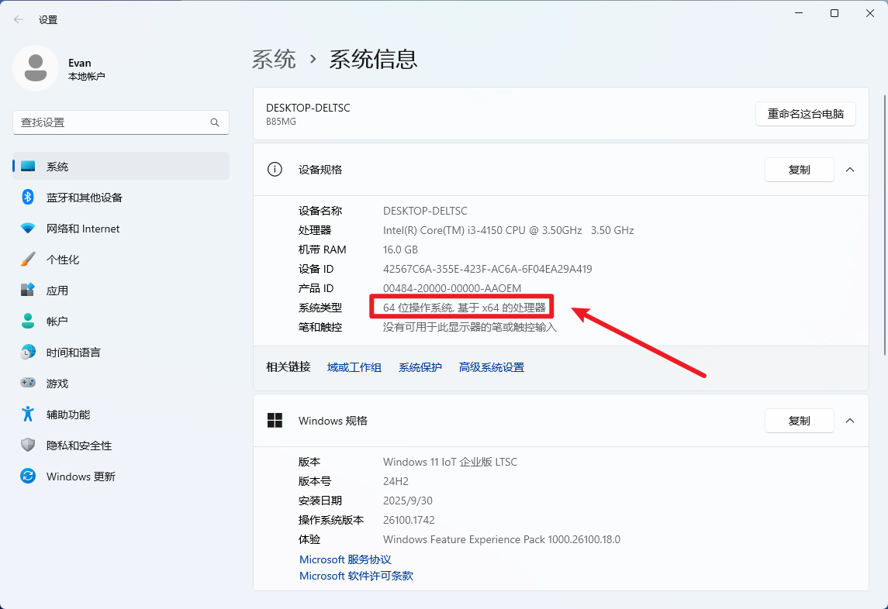
查看系统位数
如果是 Windows7 ，可以右键桌面上的“计算机”，点击“属性”。（由于我没有运行Windows7的电脑，无法演示，请见谅）
另外，64位系统兼容32位程序，所以如果你真的搞不清楚，无脑安装32位版Python也可以。
（本章节结束）[下一章节]